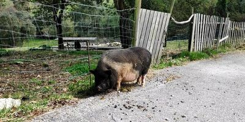

Im ersten Quartal 2019 war ich, zum wiederholten Mal, wandern in Spanien – denn, wie sich herausgestellt hat ist Wandern eine meiner liebsten Aktivitäten. Kürzlich hatte ich einen Blick in die Fotos geworfen, welche ich währen meines Trips
gemacht hatte. Ein Foto stach aus der Masse ganz besonders heraus. Nicht weil es besonders schön oder interessant gewesen wäre, sondern wegen der Verbindungen zu uns Menschen die sich herstellen lassen wenn man genau hinsieht und mit ein
bisschen Phantasie…

Ein Schwein: Fett, träge und auf der „falschen“ Seite des Zaunes, in Freiheit, aber war es frei? Es tat zumindest nichts was darauf schließen ließe. Natürlich weiß es nichts von unserer Art in Schubladen zu denken, nichts von Gefangenschaft
und Freiheit, es tut einfach das was es immer tut, egal wo, sozusagen Schwein-Sein im Autopilot. Hier soll es jedoch, vordergründig, nicht um das Schwein, sondern um mich im Besonderen und uns Menschen im allgemeinen gehen und darum wie
wir unser Leben im Autopilot an uns vorbei ziehen lassen.
Ungefähr neun Jahre lang hatte auch ich die Freiheit zu gehen wohin ich wollte, zu tun wonach mir der Sinn stand. Stattdessen verharrte ich in meiner Komfort-Zone um bloß nicht über den Tellerrand blicken zu können, das war der Ort wo die
Gefahr lauerte.
Anfangs umfasste meine Komfort-Zone meinen Arbeitsplatz, mein Zuhause und den Supermarkt meines Vertrauens, sowie die verbindenden Wege. Gegen Ende dieser neun Jahre war sie auf „Zuhause“ geschrumpft. Die Wohnung zu verlassen war immer mehr
zu einer angsteinflößenden Aktion geworden.
Ich freue mich berichten zu können, dass ich das ganze ziemlich gut in den Griff bekommen habe und mich regelmäßig zwinge Dinge anzugehen, die mir im gegenwärtigen Moment vielleicht unmöglich erscheinen, einfach um die Komfort-Zone zu verlassen
und zu erkennen, dass die Gefahr bloß in meinem Kopf ist.
Meine Situation stellt mit Sicherheit einen Extremfall dar, jedoch begegne ich Tag um Tag Menschen in meinem direkten Umfeld die sich in vergleichbaren Mustern durchs Leben bewegen. Ich rede von Leuten, die von meiner Warte aus betrachtet
in die NORMAL-Schublade gehören, weil sie „normal“ wirken und „normale“ Dinge tun. Leute die seit 30 Jahren, jeden Morgen, den selben Weg, zur selben Arbeit fahren und so Sachen sagen wie: „Ich Arbeite in diesem Betrieb seit 40 Jahren!“,
und die glauben, dass das so sein muss, weil man das nun mal so macht...
Dinge zu tun, weil „man das nun mal so macht“ habe ich begonnen mir abzugewöhnen nachdem ich meinen Tiefpunkt erreicht hatte, der wiederum, wie ich heute glaube, dem Versuch geschuldet ist mit der Masse zu schwimmen und sich anzupassen,
aber ich hatte zu dem Zeitpunkt auch keine wirkliche Vorstellung davon wie eine alternative aussehen könnte. Ich hatte der Konformität eine Chance gegeben, einfach weil ich es nicht besser wusste. Das ganze hatte einen interessanten Effekt:
Ich war zwar unter Menschen (Menschen brauchen andere Menschen heißt es), Menschen die ich sogar mochte, und tat Aktivitäten die „man halt so tut“. In meinem ganzen Leben hatte ich mich bis dato noch nie so einsam und als Sonderling
gefühlt wie zu dieser Zeit, zwischen all den netten Menschen. Es hat mich echt fertig gemacht und zu jener Zeit meinen Glauben „nichts Wert“ zu sein und „kein Glück zu verdienen“ auch noch bestärkt.
Inzwischen hat sich mein Standpunkt grundlegend geändert. Ich glaube nicht mehr, dass ich oder irgendwer „Glück verdient“. Vieles deutet darauf hin, dass es viel mehr ein Nebenprodukt der Entscheidungen ist die ich für mich selbst treffe,
anstatt darauf zu warten das irgendwas passiert. Ich versuche nicht länger dazu zu gehören, sondern mache mein eigenes Ding, selbst wenn Leute in meinem Umfeld das nicht verstehen können oder für sinnlos halten. Es ist mein Leben! Niemand
außer mir braucht gefallen daran zu finden, aber falls doch bin ich bemüht als positives Beispiel zur Verfügung zu stehen.
Meine Planung für 2020 wurde bedauerlicherweise, wie die Planung vieler Menschen, vom Corona-Virus durchkreuzt. Ich gehe also in die zweite Runde im Durchhaltewettbewerb welcher das Arbeitsleben ist, mit dem Ziel: geschmiedete Pläne um exakt
ein Jahr zu verschieben (verdammte Jahreszeiten). Um dann alle Zelte abzubrechen und wandern zu gehen, bis ich mir am Ende des Geldes erneut Arbeit suchen werde und der Prozess von vorn beginnt. Ein Jahr ist ein gutes Zeitfenster um an
meinen Fähigkeiten als Schreiberling zu feilen und meinen immer vielseitiger werdenden Interessen nachzugehen.
„Das klingt nach einem Haufen Arbeit! Wozu das ganze? Und das hier liest doch eh keiner!“ Warum tue ich also was ich tue? Weil ich, wenn meine Zeit gekommen ist und der Schnitter mich holt und mein Leben vor meinen Augen vorüberzieht (wie
es ja heißt), in der Lage sein möchte zu sagen: „Gut gemacht! Es sah echt finster aus aber du hast das Ruder herumgerissen. Es lief nicht alles wie am Schnürchen, du warst gezwungen Kompromisse zu machen, aber letzten Endes hast du dein
Leben so gelebt wie du es entschieden hast, egal wie verrückt oder unkonventionell die Pläne auch waren. Du hast dich bemüht der beste Mensch zu sein der du, in der gegebenen Situation, sein konntest, anstatt die Welt mit deinem Nihilismus
vollzukotzen!“ UND weil ich weiß was dieses passive, Autopilot-Konsumenten-Leben für mich in petto hält. Das ist ein Ort an den ich niemals zurückkehren möchte!
Stell dein Leben auf den Kopf und gib ihm Struktur! Aber warum ist es so schwer?
Ich hatte mich also nicht umgebracht und in Folge dessen begonnen mich zu fragen: Kann ich ein lebenswertes Leben führen und wenn ja wie?
Psychologen, Autoren und Coaches scheinen sich beim Thema Depression einig zu sein, dass Tagesstruktur einen ausschlaggebenden Punkt in Sachen Besserung ausmacht. Meinem Stundenplan zu Schulzeiten nicht unähnlich legte ich also eine Liste
an und gab meinem Tag etwas Struktur. In den letzten zweieinhalb Jahren wurden viele Anpassungen vorgenommen und ich glaube nach wie vor, dass da noch Luft nach oben ist. Hier schon mal vor weg: Es geht mir seither besser. Bevor wir das
ganze näher unter die Lupe nehmen, werfen wir jedoch zunächst mal einen Blick auf meinen ungefähren Tagesablauf als ich an meinem Tiefpunkt war und ergründen (zumindest teilweise) wie es überhaupt so weit kommen konnte:
Schlafen bis es an der Zeit ist zur Arbeit zu gehen.
Arbeiten (doof)
Konsum von Pornografie und Videospielen
Das Ganze von vorn!
Ich glaube nicht, dass Videospiele grundsätzlich schlecht sind, so habe ich Englisch gelernt. Pornografie vermutlich schon, allerdings habe ich das nicht ausreichend geprüft, daher das Wort „vermutlich“! Wie bei vielen Dingen die dem Zeitvertreib
dienen ist es wichtig zu erkennen ob man sie unter Kontrolle hat oder ob sie einen kontrollieren. Bei mir war jahrelang letzteres der Fall, was zur Folge hatte, dass ich, in vielerlei Hinsicht, für eine lange Zeit, keinerlei Fortschritte
gemacht habe.
Ich glaube insgeheim wissen wir was uns gut tut und was nicht. Wir wollen uns bloß nicht eingestehen, dass Handlung X ein Problem darstellt, wir haben uns einfach daran gewöhnt, diese Gewohnheiten sind Teil unserer Tagesroutine geworden, ein
Teil von uns. Falls wir es uns jedoch eingestehen können gibt es da noch eine andere Hürde die es zu überwinden gilt: Derartiges Verhalten, welches wir uns oft über Monate oder sogar Jahre hinweg antrainiert haben abzulegen und mit etwas
zu füllen, das uns möglicherweise, tatsächlich Freude bereitet. Bei dem Versuch zu erklären warum uns dies oft wie ein unüberwindbares Hindernis vorkommt muss ich mal eben einen Absatz lang vom Thema abkommen.
Wir leben in einer Zeit in der wir alles sofort bekommen können. Kram auf Amazon bestellt? Am nächsten Tag klingelt der Paketbote! Lust auf nen Film? Netflix kennt alle Filme und zu jeder Zeit. Langeweile? Da ist ein Computer in deiner Hosentasche
mit dem du deine Sinne stimulieren kannst wann immer dir der Sinn danach steht. Das Thema Dopaminsucht jedoch verdient einen eigenen Beitrag.
Wir sind darauf konditioniert alles sofort haben zu wollen, was ein Problem sein kann wenn man versucht eine alte, „schlechte“ Gewohnheit durch eine neue „gute“ zu ersetzen, da sich der Wandel nicht sofort einstellt, sondern Zeit in Anspruch
nimmt, was genau das ist was ich nicht habe, oder? Ich will meine Glücksgefühle jetzt! Und ich kann sie jetzt haben, da ist schon wieder so ein roter Punkt neben der Facebook-App-Icon auf meinem Handy, ich gucke nur mal kurz....
… sorry bin wieder da! Ich musste da gerade mal was machen. Wo war ich? Ach ja, der Wandel stellt sich nicht direkt ein und ich kann meine Glücksgefühle erst später haben, wie in dieser wissenschaftlichen Studie mit den Kindern und den Marshmallows
auf die ich vielleicht in einem späteren Beitrag noch mal zu sprechen komme, falls ich bis dahin herausgefunden habe wie man einen ausklappbaren Button für die Quellen zusammenbastelt. Nun gut, ich kann also jetzt nicht glücklich sein,
weil ich etwas neues lerne in dem ich schlecht bin, was nur logisch ist, weil ich es ja noch nie gemacht habe. Die Konzentration lässt nach und plötzlich meldet sich dann wieder diese Stimme in deinem Kopf zu Wort: „War ja klar, dass das
nix wird! Du bist so ein Nichtsnutz! Ich habs dir doch vorher schon gesagt: Das ist ne blöde Idee. Es führt einfach zu nix! Du übst jetzt schon seit 30 Minuten Ukulele spielen und kannst noch nicht mal „Somewhere over the Rainbow“ spielen!
Warum gucken wir nicht stattdessen was es neues auf Youtube gibt?“, dabei handelt es sich um die „entschärfte“ Variante ihrer Worte.
Die Stimme lügt, so viel ist mir inzwischen klar und es ist von enormer Wichtigkeit dass wir erkennen wenn sie das tut um ihr entgegen zu können: „Ah da bist du ja wieder! War nett als du mal eben ruhe gegeben hast. Es mag stimmen, dass ich
bisher keine nennenswerten Erfolge zu verzeichnen habe, aber das muss nicht so bleiben. Einstein hatte 15 Jahre lang nichts vorzuweisen und ich fange gerade erst an. Wir wissen doch beide wohin es führt wenn wir machen was du vorschlägst!
Wie wärs wenn wir deinen Vorschlägen später nachgehen?!“, oder vergleichbares. Das Wissen um meine Abgründe, meine persönliche Hölle, und wie es ist an diesem Ort, motiviert mich ungemein nicht mehr in alte Muster zu verfallen - dennoch
kommt es zuweilen vor!
Pro-Tip: Den Gelüsten nicht nachzugeben und zu sagen: „Lass uns das doch in 10 Minuten machen!”, hat sich bewehrt, 10 Minuten später habe ich es oft schon vergessen!
Werfen wir nun also mal einen Blick auf meinen neuen Tagesablauf:
Früh aufstehen
Meditation
Training mit dem eigenen Körpergewicht
Kurze Spanisch-Übung auf Duolingo
Programmieren lernen (dieser Blog ist mein erstes Projekt)
Arbeiten gehen (leider immer noch doof, aber weniger)
Lesen oder mehr programmieren
Zweite Spanisch-Übung
Früh schlafen gehen
Ich will nicht lügen! Es ist oft hart und an ca. 7/7 Tagen habe ich keine Lust auf den Sport-Teil. Aber an 5/7 Tagen mache ich ihn (meistens) trotzdem und die Stimme ist immer da und versucht mich abzuhalten. Wenn ich viel Zeit habe, z.B.
an den Wochenenden, gehe ich oft raus in die Natur und/oder lese ein Buch zu einem Thema das mich interessiert (Psychologie/Stoa/Buddhismus/Programmieren). Es funktioniert wirklich gut, solange ich beschäftigt genug bin und meinen Fokus auf eine (positive) Tätigkeit richte hat die Stimme Pause
und am Ende des Tages fühle ich mich gut und habe hoffentlich etwas neues gelernt. Sicher, sie schweigt auch wenn ich gehorche und tue was sie von mir will, aber dafür ernte ich nichts als Spott, Hohn und dann geht es wieder bergab.
Zum Abschluss noch ein paar aufmunternde Zitate die zum Thema passen:
Wir sind, was wir wiederholt tun. Vortrefflichkeit ist also keine Handlung, sondern eine Gewohnheit. - Will Durant
Wenn du immer tust was du immer getan hast, wirst du immer bekommen was du immer bekamst. - Henry Ford
Ob du denkst, dass du es kannst oder nicht - du hast Recht. - Henry Ford
Der beste Zeitpunkt, einen Baum zu pflanzen, war vor 20 Jahren. Der zweitbeste Zeitpunkt ist jetzt. - Chinesisches Sprichwort